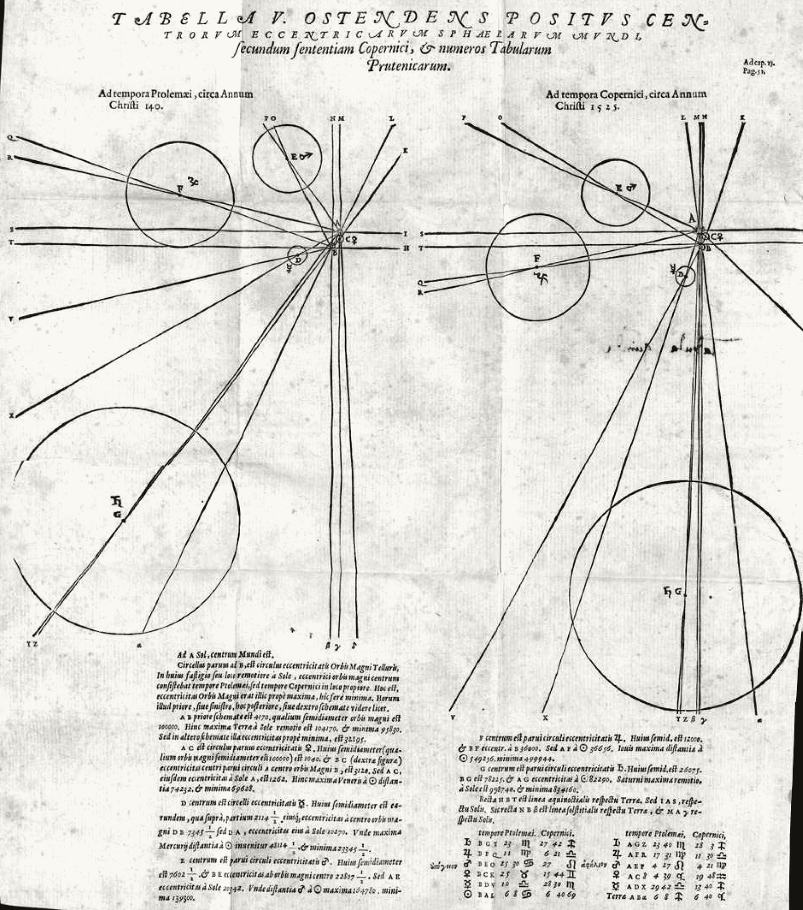

Chapter XV: Correction of Distances, and Diversity of Prosthaphaereses¶
f. 0061 · p. 50Correction of distances, and diversity of prosthaphaereses.
Lest I give you, friendly Reader, any occasion to reject this whole enterprise on account of a slight discrepancy, you must here be reminded of something I would have you keep well in mind: Copernicus's aim is engaged not in cosmography, but in astronomy. That is to say, he cares little whether he departs somewhat from the true proportion of the orbs, so long as from observations he establishes numbers as apt as possible for demonstrating the motions and computing the planets’ places. Yet if anyone tries to give fitter ones, and corrects Copernicus’s numbers so as to disturb little or nothing in the prosthaphaeresis, Copernicus will readily allow it.
In order, therefore, finally to put the finishing hand to this business, and that it may appear what and how much is changed in the parallaxes of the terrestrial orb for each of the planets, I shall build a new world; and since the proportion of each eccentricity to the semidiameter of its orb has already been investigated by astronomers, if anything is changed in the farthest or nearest distance of an orb from the center of the universe through the interposition of the bodies, that change will have to be reckoned proportionally in the eccentricity.
f. 0063 · p. 51The beginning shall be from the greatest distance of the Earth upward, and from its least distance downward toward the center.
Before all else, however, the numbers of Copernicus must be reworked and specially adapted to the present design. For although he undoubtedly sets the center of the whole universe in the body of the Sun, nevertheless—to aid calculation by a shortcut, and lest by departing too far from Ptolemy he confuse his diligent reader—he computed the greatest and least distances of all the planets, as well as their places in the zodiac (which have retained the name of apogees and perigees), not from the center of the Sun, but from the center of the Great Orb, as if that were the center of the universe. even though that center always stands as far from the Sun as the greatest eccentricity of the Earth (or of the Sun) is at any given time. If I should retain those numbers in the present business, this inconvenience would follow: either an error would be committed in the inscription, while the orb of the Earth—which would be merely a surface, as may be seen in the preceding Table IV—was reckoned as a body, or else I should leave no thickness to the terrestrial orb as I did to the others. Thus the centers of the dodecahedral planes and the angles of the icosahedron would lie on the same spherical surface, so the whole world would settle closer together, far narrower than the experience of the motions and observations allow. When I disclosed this scruple to Michael Mästlin, my most distinguished teacher, to test whether he would approve the theorem just set forth, he took this labor upon himself with unexpected eagerness to help me; not only did he recompute the planetary distances anew from the Prutenic Tables, he also constructed the present Table for me, (Margin: Here belongs Table V.) thus relieving me, then occupied with many other duties, of a great, hard, and burdensome task.
f. 0062 · Tabella V

TABLE V. Showing the positions of the centers of the eccentric spheres of the universe, according to the opinion of Copernicus and the numbers of the Prutenic Tables. (For the times of Ptolemy, about the year of Christ 140. / For the times of Copernicus, about the year of Christ 1525.)
At A is the Sun, the center of the Universe.
The small circle at B is the circle of eccentricity of the Great Orb of the Earth. At its summit, or place farther from the Sun, stood the center of the eccentric Great Orb in Ptolemy’s time, but in Copernicus’s time at the nearer place.
That is, the eccentricity of the Great Orb was there nearly greatest, here almost least. The former may be seen in the first or left diagram, the latter in the second or right diagram. In the first diagram A B is 4170, where the semidiameter of the Great Orb is 100000; hence the Earth’s greatest distance from the Sun is 104170, and its least 95830. In the other diagram, that nearly least eccentricity is 32195.
A C is the small circle of eccentricity of ♀. Its semidiameter (where the Great Orb’s semidiameter is 100000) is 1040, and B C (in the right figure) is the eccentricity of the small circle’s center from the Great Orb’s center B, 3120; but A C, its eccentricity from the Sun A, is 1262. Hence the greatest distance of Venus from ☉ is 74232, and the least 69628.
D is the center of the small circle of eccentricity of ☿. Its semidiameter is \(2114\frac{1}{2}\) of the same parts as above, and its eccentricity from the center of the Great Orb D B is \(7345\frac{1}{2}\), while D A, its eccentricity from the Sun, is 10270. Hence Mercury’s greatest distance from ☉ is found to be \(48114\frac{1}{2}\), and its least \(23245\frac{1}{2}\).
E is the center of the small circle of eccentricity of ♂. Its semidiameter is \(7602\frac{1}{2}\), and B E, its eccentricity from the center of the Great Orb, is \(22807\frac{1}{2}\); but A E, its eccentricity from the Sun, is 20342. Hence the greatest distance of ♂ from ☉ is 164780, and the least 139300.
F is the center of the small circle of eccentricity of ♃. Its semidiameter is 12000, and B F its eccentricity from B is 36000, but A F from ☉ is 36656. Jupiter’s greatest distance from ☉ is 549256, and its least 499944.
G is the center of the small circle of eccentricity of ♄. Its semidiameter is 26075, B G is 78225, and A G its eccentricity from ☉ is 82290. Saturn’s greatest distance from the Sun is 998740, and its least 834160.
The straight line H B I is the equinoctial line with respect to the Earth, but I A S with respect to the Sun. Likewise the straight line N B β is the solstitial line with respect to the Earth, and M A γ with respect to the Sun.
Planet |
Apogee (ἀπόγειον) — Ptolemy’s time |
Apogee — Copernicus’s time |
Aphelion (ἀφήλιον) — Ptolemy’s time |
Aphelion — Copernicus’s time |
|---|---|---|---|---|
♄ |
|
27 42 ♐ |
|
28 3 ♐ |
♃ |
|
6 21 ♎ |
|
11 30 ♎ |
♂ |
|
27 ♌ |
|
4 21 ♍ |
♀ |
|
15 44 ♊ |
|
19 48 ♒ |
☿ |
|
28 30 ♏ |
|
13 40 ♐ |
☉ / Earth |
|
6 40 ♋ |
|
6 40 ♑ |
With the Author’s own permission I share this table with you, Reader, and commend it to you as one that will not only profit you in the present matter, but also untie a most intricate knot before your eyes, and lead you, as it were by the hand, into the inner sanctuaries of the Prutenic Tables and of Copernicus. For from it is delightful to learn how the different apsides of the planets fall into different places of the zodiac—which in Venus yields a difference of more than a whole third of the circle, since her apogee is in ♉ and ♊, while her aphelion is in ♌ and ♒. One may also see that the lines of distance from the Sun are far different from those
f. 0064 · p. 52from the center of the terrestrial orb. This difference is greatest in ☿, because the whole eccentricity of the Earth is added to his distance. In Jupiter, however, little changes, since he becomes highest not, like Saturn, opposite the Sun, but in ♎, where he is nearly equidistant from both the center of the Sun and the center of the Great Orb.